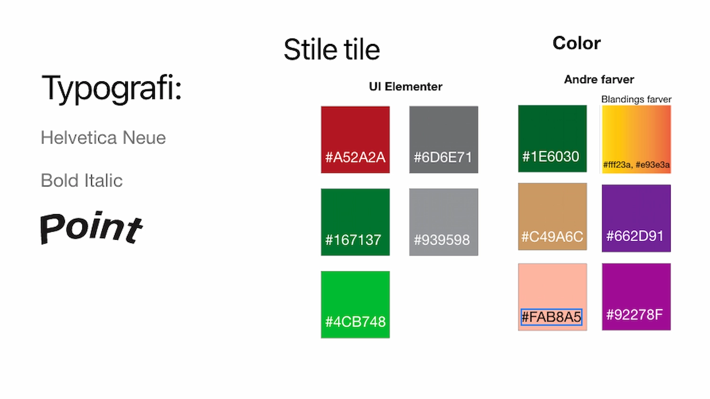

Animation

I Animation temaet fik vi en introduktion til Java script. Og lavet vores helt eget
spil ved hjælp af html og css men
med tilføjende funktioner fra java script som add, remove og fald funktioner samt at man skulle
kunne vinde og tabe
spillet. Vi skulle også lære at lave en teknik diagram hvor man kan læse ind i spillet funktioner
lidt lige som et
wirefram.
Jeg lavet et vin spil, hvor man skulle samle så mange druer som muligt, hvis man fik
mere en 10 points vandt man, hvis
man valgte de klaser hvor der ikke var druer nok på tabte man. Jeg valgte stilen matmisjonen til
stilen af figurende til
mit spil, med blandingen af minimalistisk stil til min hjemmeside. Jeg lavet derefter alle mine
assets i illustrator
samt baggrunde og satte det ind i mit spil. Vi skulle også selv optage lyd som jeg optog på min
telefon samt redigere
det og sætte det ind i spillet i java script.
Jeg havde lidt udfordringer fordi det gik op for mig at jeg blandet dansk og engelsk da jeg var
færdig med spillet. der
var også et sted jeg havde lavet en tekst om så det lignet en sangtekst i min forside piche


